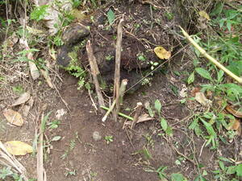
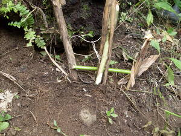

baled  
/balɔd/
n.
a sprung nooselike trap (for a lizard, rat or bird)
Cult. Used to catch an ibid. Sweet potato skins are used as bait and are enclosed in a circle of stakes. As the lizard approaches the narrow entrance, it releases the spring and is trapped.
Eng. trap; snare; noose
OCM: Hunting and Trapping (224)
DDP: Trap (6.4.2)
Online dict status: -
Usage level: R
v.
for someone (egpamaled, migpamaled/impamaled, agent, eg><ø-paN-) to set a baled trap (egpamaleran, impamaleran/migpamaleran/pigpamaleran, location, eg><an-pA-)
Amana egkateu ka amey ku ne egpamaled te ambew su impanulu sikandin te amey rin dengan.
My father is very skilled at trapping rats because his father taught him before.
Eng. trap
OCM: Hunting and Trapping (224)
DDP: Trap (6.4.2)
Online dict status: -
Usage level: R
Updated by: RJH,RMU,RUL,QDL,RJH
Last updated: 23/Oct/2012
This page last updated: 03-Jan-2020
Copyright © 2009-2014, Matigsalug Language Christian Association, Inc